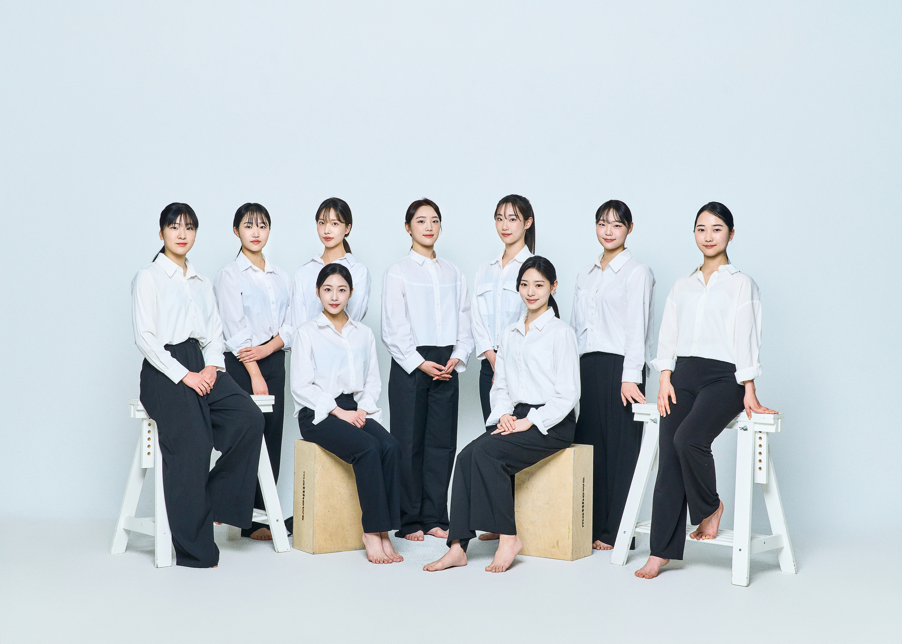

PERFORMANCE
한국무용Korean Dance
박재희류 태평무 재구성
작품내용
국가무형유산으로 지정된 한영숙-박재희류 태평무는 국태민안과 태평성대를 기원하는 왕과 왕비의 마음을 담고 있으며 애민사상과 주체정신이 강한 한성준선생이 창안한 한국의 대표적인 전통춤이다.
궁중무용의 절제미와 민속무용의 흥과 신명을 조화시킨 춤으로 다양한 장단과 발딤새가 특징인 춤이다.
본 공연에서는 박재희류 태평무를 재구성하였다.
- 음악 |
- 경기 도당굿을 기반으로 한 태평무 장단
- 출연 |
- 강나윤, 경서진, 곽승주, 김민섭, 김수현, 김유나, 김윤서, 심연우, 윤선우, 장하나, 조안지
